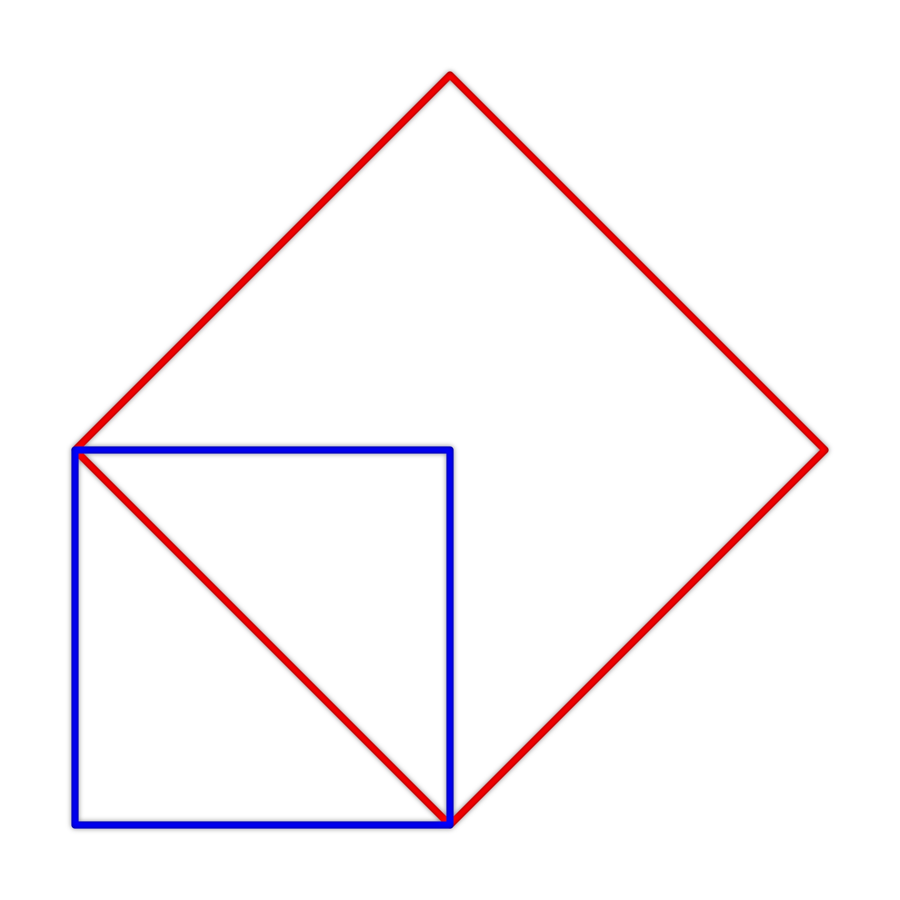
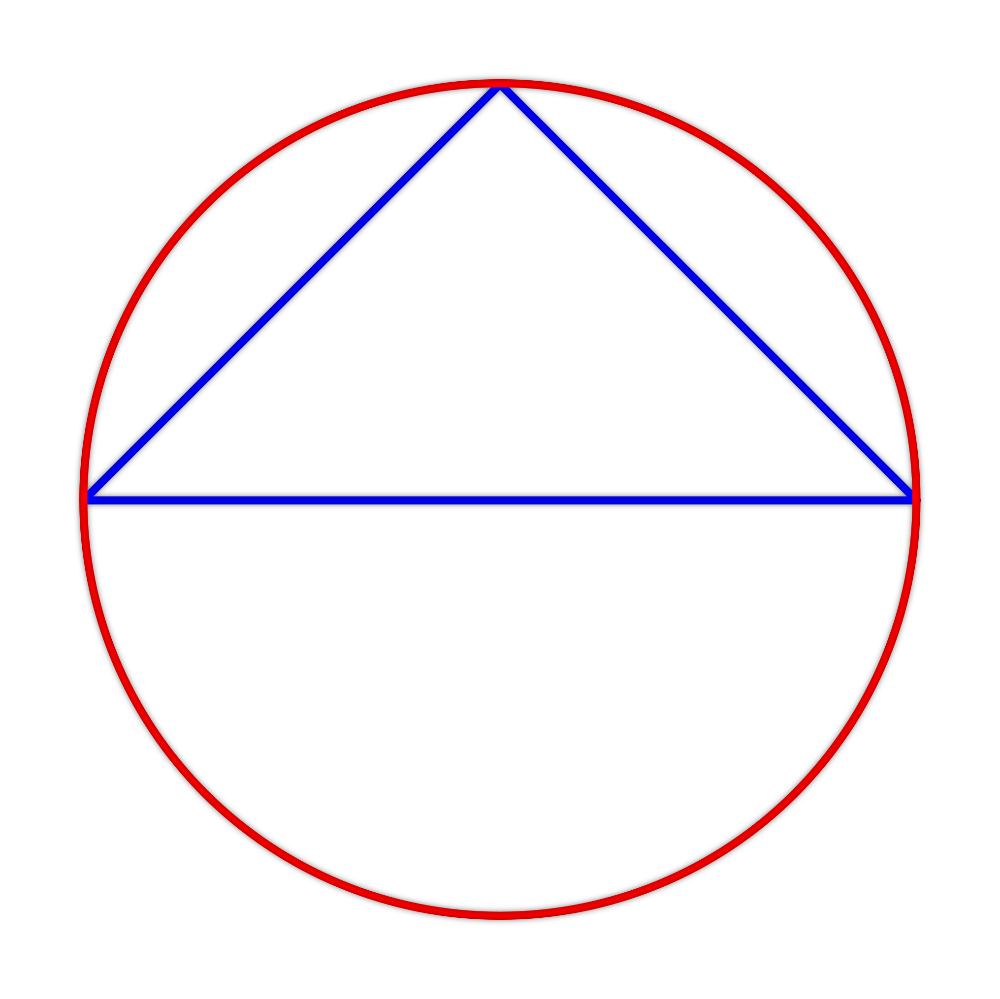
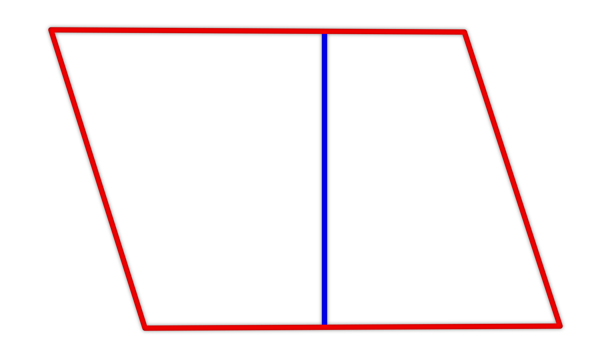
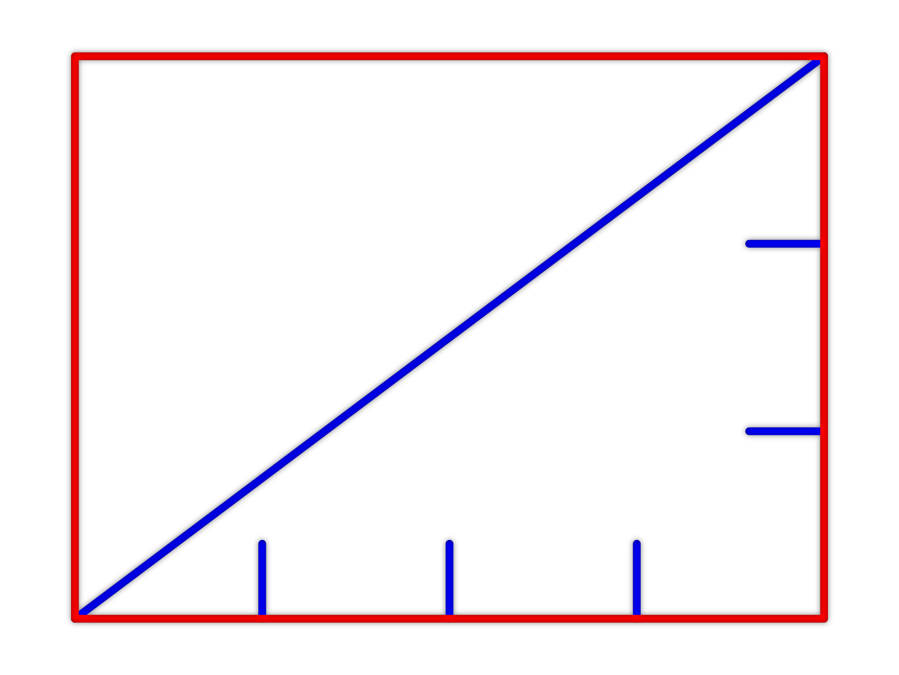

Je dán modrý čtverec. Dále je zobrazena úhlopříčka tohoto čtverce a je sestrojen nový červený čtverec jehož strana je úhlopříčkou modrého čtverce. Obsah červeného čtverce je 18 cm². Určete obsah modrého čtverce.

Nápověda
Zkuste přijít na to, v jakém vztahu je modrý a červený čtverec. Pokud na to nepřijdete, použijte vhodně Pythagorovu větu.
Úloha 8
Je dán rovnoramenný pravoúhlý trojúhelník o obsahu 100 cm². Určete obvod a obsah opsaného kruhu k tomuto trojúhelníku. (Počítejte s hodnotou π = 3,14)

Nápověda
Protože je trojúhelník pravoúhlý základna prochází středem (Thaletova věta). Přemýšlejte, kde všude na obrázku je určitým způsobem zapojený poloměr kružnice.
Úloha 9
a) Délka strany čtverce se zmenší dvakrát. Určete kolikrát se zmenší jeho obsah.
b) Délka strany čtverce se zmenší třikrát. Určete kolikrát se zmenší jeho obsah.
Nápověda
Označte si stranu původního čtverce „a“ a stranu menšího čtverce „0,5a“. V Jakém vztahu jsou jejich obsahy?
Úloha 10
Je dán kosodélník s délkami stran 3 cm a 4 cm. Výška k delší straně je dlouhá 1,5 cm. Určete délku výšky ke kratší straně.

Nápověda
Spočítejte jako mezivýpočet obsah celého kosodélníku a snažte se tuto informaci dále využít.
Úloha 11
Je dán obdélník jehož délky strany jsou v poměru 3 : 4. Délka jeho úhlopříčky je 20 cm. Určete jeho obvod a obsah.

Nápověda
Označte si jednu stranu "3x" a druhou stranu "4x". Určete pomocí Pythagorovy věty hodnotu této neznámé "x".
Úloha 12
Je dán obdélník s délkami stran 9 cm a 12 cm, který je rozdělen pomocí dvou úseček na tři části (viz obrázek). Jedná se o dva pravoúhlé trojúhelníky a největší část je čtyřúhelník (červeně). Jeden z pravoúhlých trojúhelníků má délky odvěsen 3 cm a 4 cm. Druhý pravoúhlý trojúhelník má délky odvěsen 5 cm a 12 cm. Určete obvod a obsah uvedeného červeného čtyřúhelníku.
Nápověda
Určete délku každé úsečky na obrázku. Pro obvod čtyřúhelníku využijte Pythagorovu větu. Obsah určete jako rozdíl obsahu celého obdélníku a obsahů trojúhelníků.
Úloha 13
Je dán trojúhelník s délkami stran 3 cm, 4 cm a 5 cm. Určete délku jeho nejkratší výšky.